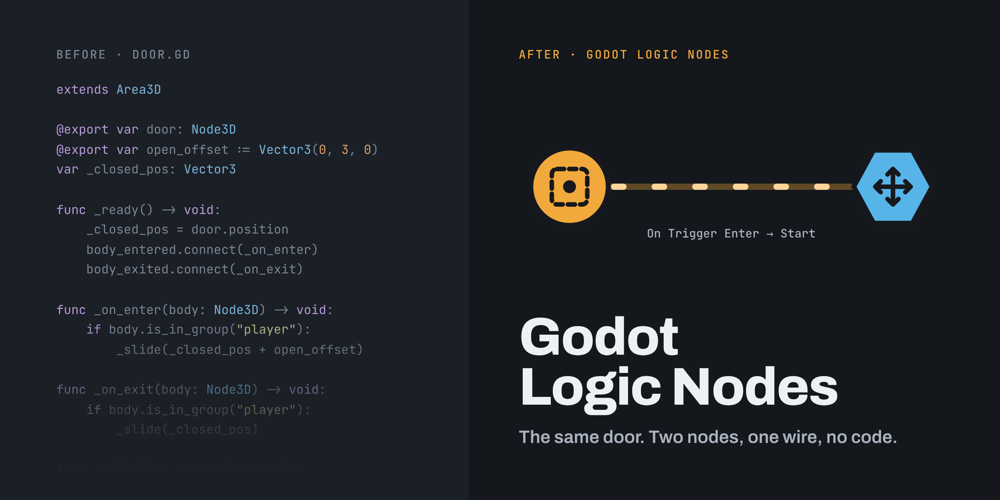

Godot Logic Nodes is a free visual scripting addon for Godot 4 that lets developers build gameplay without writing code. Place triggers, doors and timers right in your level and wire them together.
Godot 4.7+ · GDScript · MIT license
Add Logic Nodes from the Add Node dialog. They sit in the 3D level, next to the doors and platforms they control.
Select a node and use the Logic I/O panel to connect one node's output, like On Trigger Enter, to another node's input, like Start.
The level runs your logic. Turn on Trace or drop in a Debug node to see each signal as it fires.
A box that fires when something walks into it or out of it. Proximity doors, jump scares, checkpoints.
A trigger where the player presses a key to use something: a lever, a button, a door handle.
Slides an object in a straight line. Sliding doors, elevators, platforms and gates.
Turns an object around a pivot. Hinged doors, fans, levers and drawbridges.
Fires once when the scene starts.
Passes a signal on to everything wired to it, with an optional delay.
Fires when something has happened a set number of times.
Waits, then fires, once or on repeat.
Remembers a yes/no fact and sends an event one of two ways.
Plays a sound once, or loops it until stopped.
Shows a short message on screen while you playtest.
This site will host the user guide and node reference. Until then, the README on GitHub covers installation, the Logic I/O panel and every node.